Vivarium
Contents
Vivarium#
Vivarium is a software tool#
Vivarium is an “interface protocol” for connecting separate models, simulators, and data into a large, complex, and open-ended network that anyone can contribute to.
Vivarium allow you to modularize your modeling#
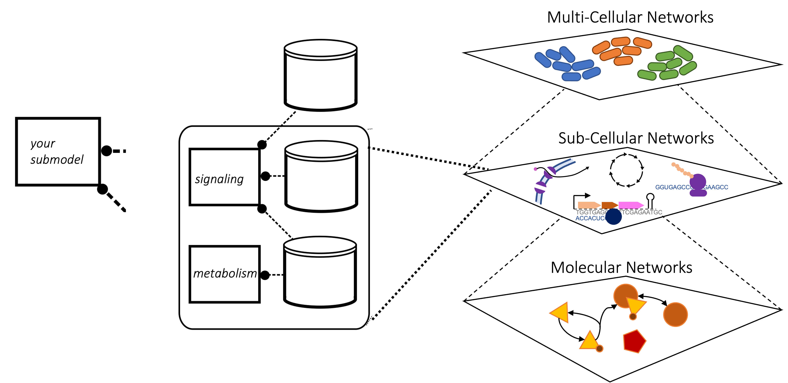
In Comp bio you will a single simulator for a single type of mechanism, but you very quickly see what you can’t do with your simulator. By embracing modularity you can add new modules, plug them in, and run them. Imagine a multiscale system, where you have simulations within simulations within simulations. Each of these is uspported by some computaions processes which you can then plug in.
Vivarium offers an intuitive, modular design#
The basic elements on Vivarium are:
Processes
Stores
Processes#
Processes: Consist of parameters, ports, and an update function
Minimal Process: Transcription#
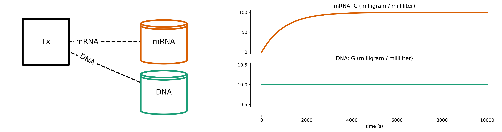
Stores#
Stores: Hold the state variables, map the variable names to their values, and apply the updates
Composites: Combining Modules#
Composites: Bundles of processes and stores, wired together by their ports, and run together in time 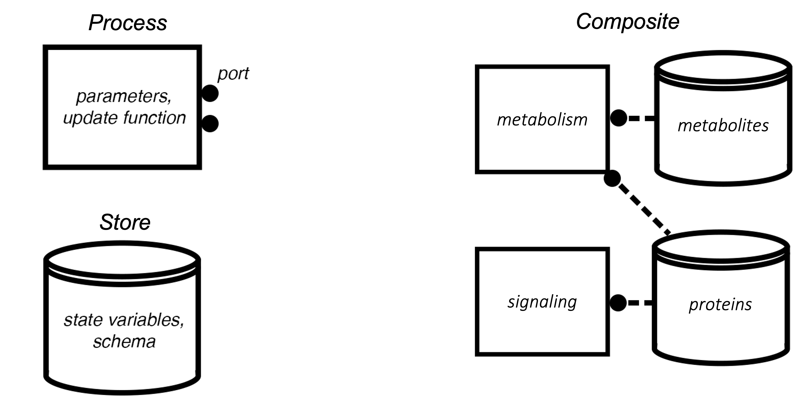
Minimal Composite: Transcription + Translation#
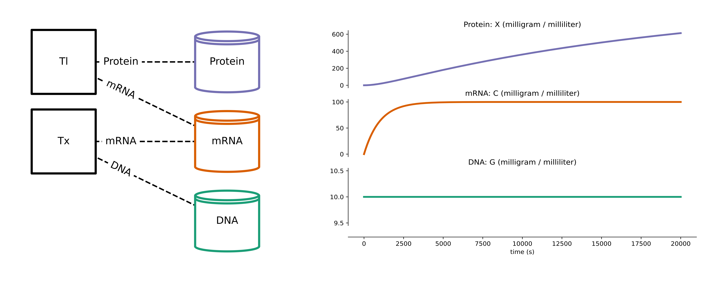
The Vivarium Engine Supports Multiple Timescales#
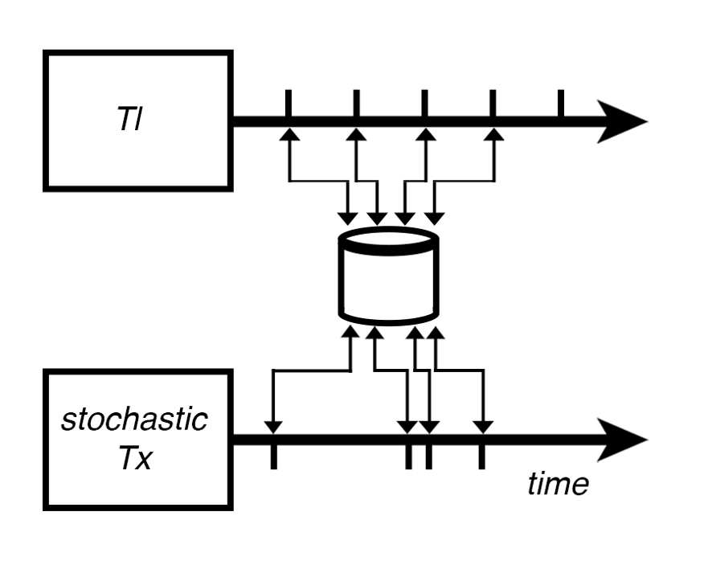
“Steps” run between time-dependent processes#
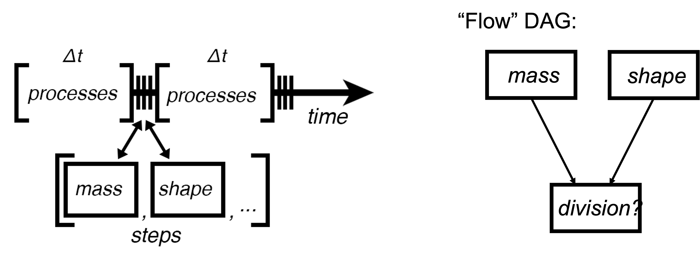
Modularity makes it easy to wire in different processes#
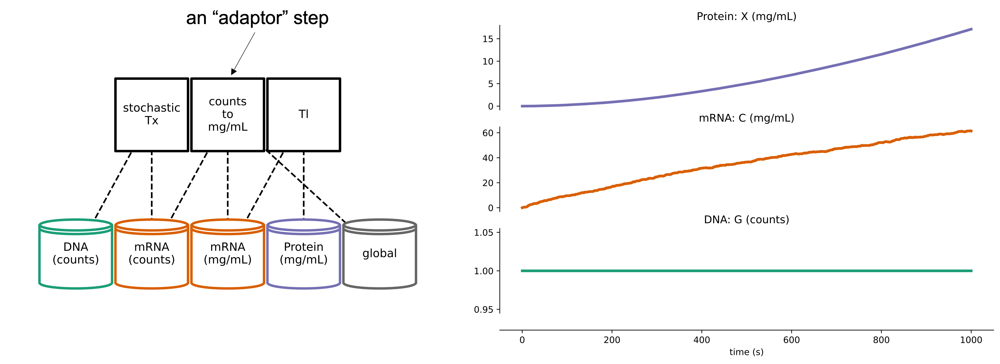
Hierarchical embedding enables multiple scales#
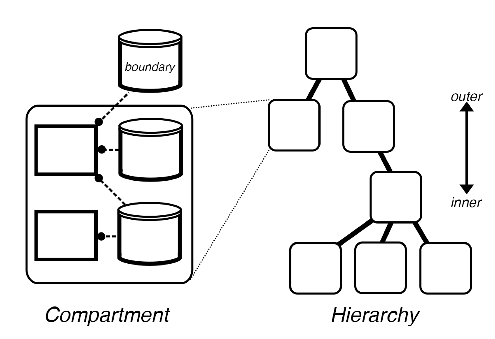 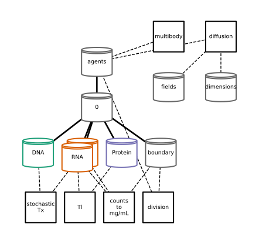
Hierarchical Updates allow subgraphs to be added/removed/moved during simulation runtime#
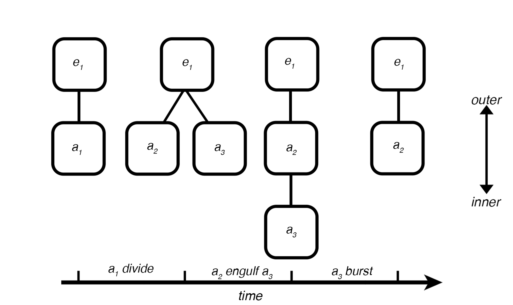
Hierarchical Update Example: Division#
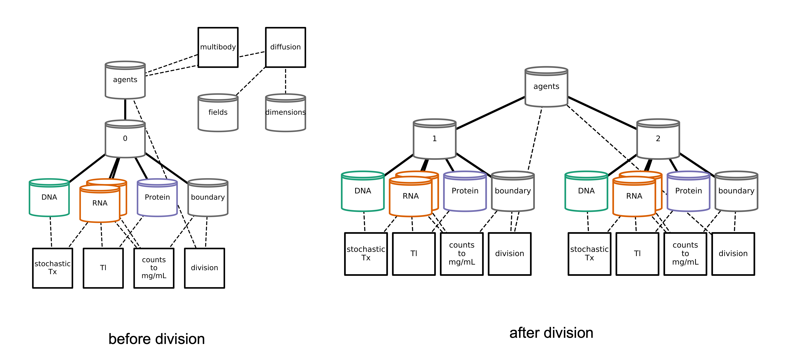
Tools#
vivarium-cobra: Dynamic Flux Balance Analysis#
pip install vivarium-cobra
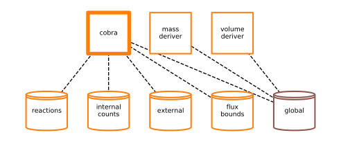 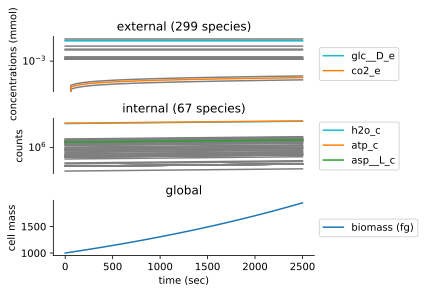
vivarium-bioscrape: Chemical Reaction Networks#
pip install vivarium-bioscrape
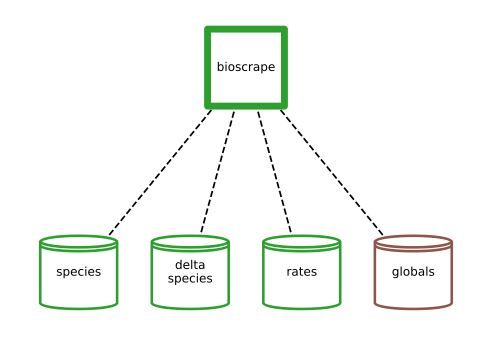 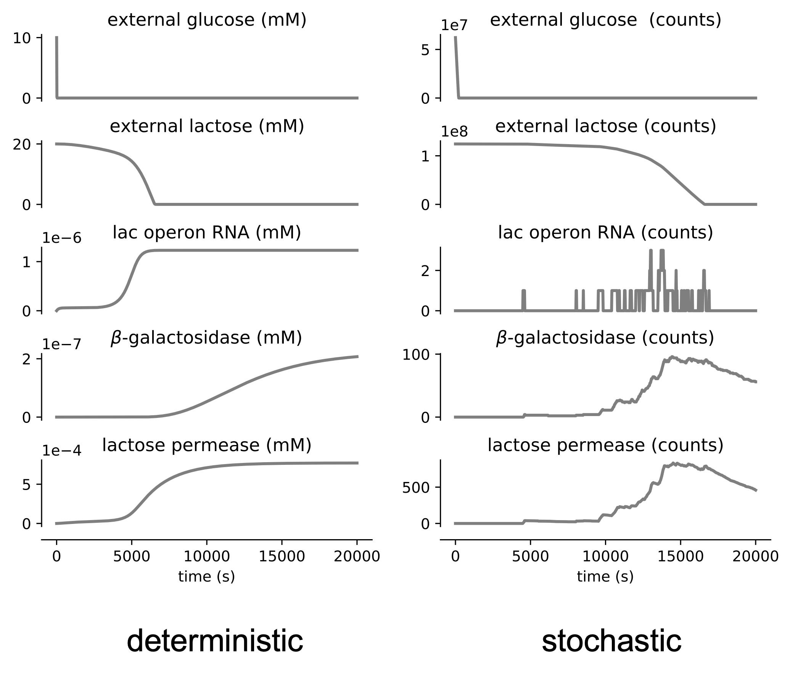
vivarium-multibody: Solid Body Physics + Diffusion#
pip install vivarium-multibody
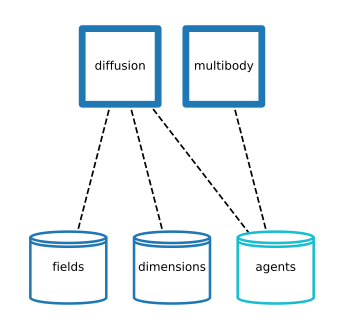 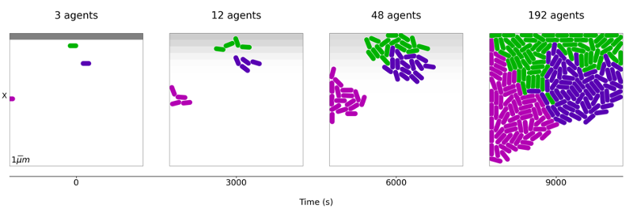
Wiring it all together#
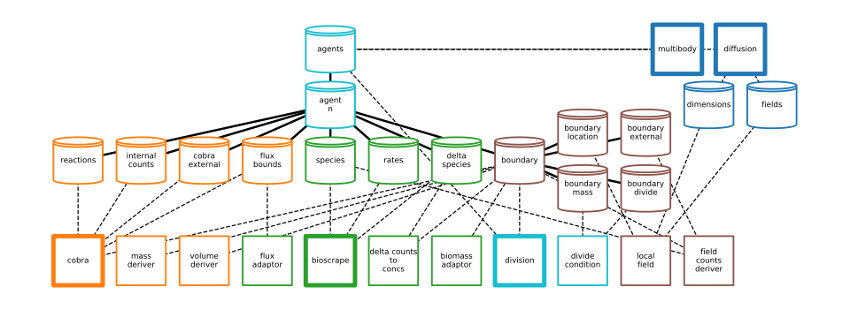
Simulation results blend properties of all the input simulators#
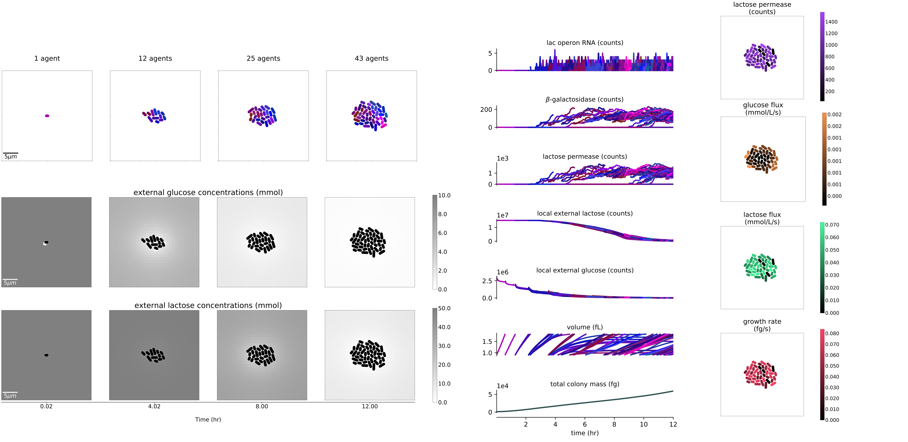
Biosimulators#
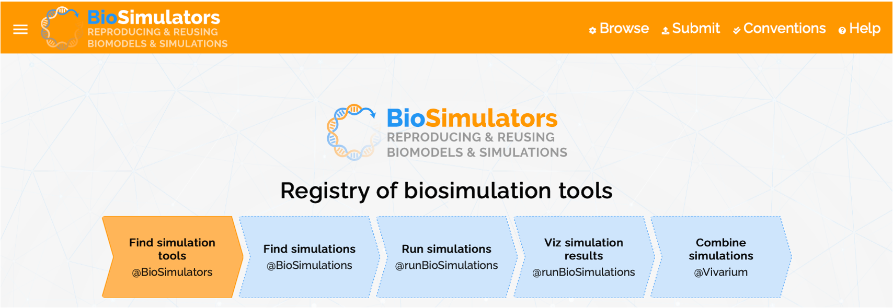
Vivarium-ecoli#
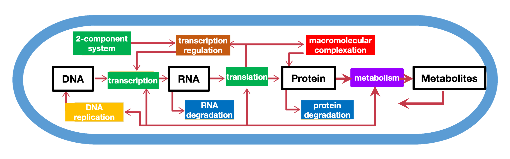

Mass fractions#
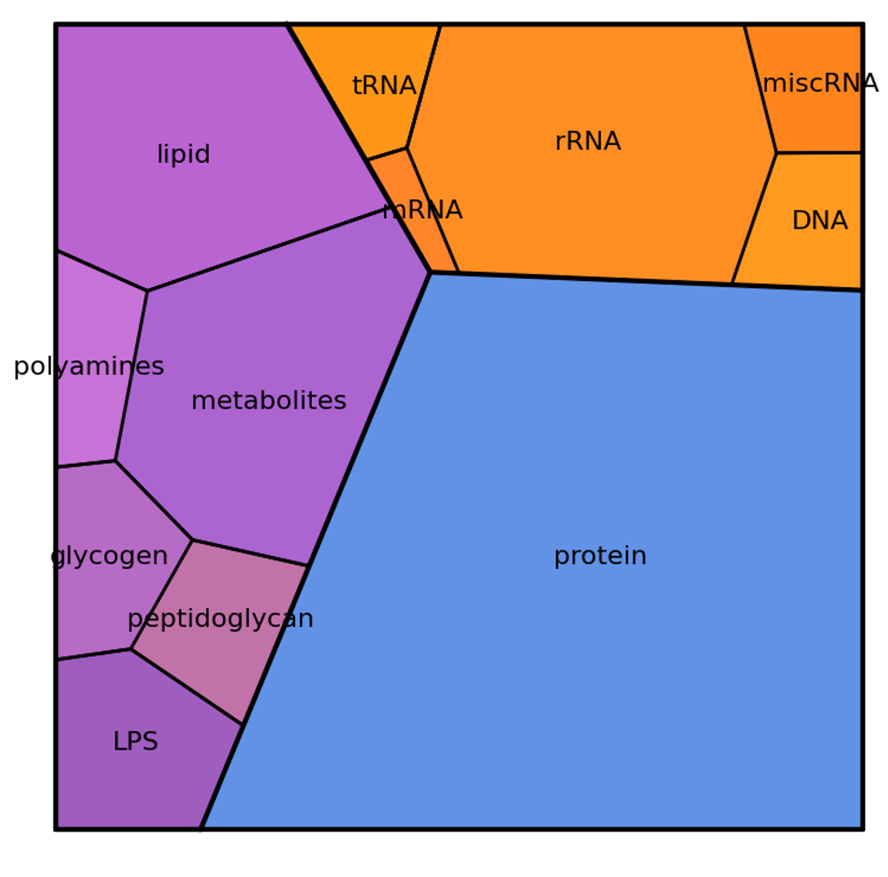